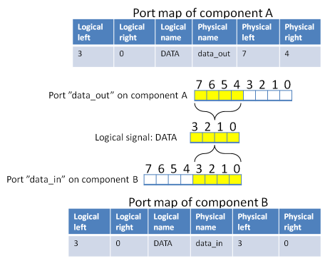

Port maps editor
To map a pair of logical and physical ports
Select a port in upper left or right list and drag-drop over to a port on the other list.
When dropped, the pair(s) of physical and logical port(s) appear on the bottom.
To remove mapping, select some cell(s) on the bottom table and hit DEL or right-click Remove mapping.
To map multiple ports at once
- Move ports up/down in both lists to desired order.
- Select range of ports by SHIFT or picking by CTRL first on one list and then on the other.
- Click Connect
Map one to many
Click 1 to many, select multiple ports in one list and drag-drop to a port on the other list.
Details
The port maps tab of a bus interface editor is used to group the physical ports of the containing component to the
logical signals listed in the associated abstraction definition.
The top-left corner contains a list of the logical signals that were defined in the abstraction definition assigned
in the general tab. The top-right corner contains a list of the physical ports in the component.
The bottom table displays the mappings between logical signals and physical ports. A mapping can be created by dragging
an item from one of the top lists to the another or by selecting an item in the both lists and pressing enter or
clicking the connect button. After this the selected items disappear from the top lists and appear as mapped on the
port map table on the bottom.
If user selects several items on both lists and connects them, then mappings between the ports are made in the
order which the items were listed. If a mapping from one port to many is desired then user may toggle the “1 to many” button
and select a single item on either list and connect it to all selected ports on the other list. User can remove the
mappings from the bottom table by selecting the row and pressing delete or selecting “Remove mapping” from the context menu.
When a mapping is removed the associated ports return to the top lists. Pressing the clean up-button will remove any
duplicate ports from the lists. A port can also be returned to the top list by selecting it in the bottom table and selecting
“Restore port to list” in the context menu. Picture below depicts how the physical ports between two component instances
are connected through their bus interfaces.

On the left side is a list of physical ports found on the component A. The right side lists the physical ports found on a
component B. The lines between the physical ports and the logical signals represent the created port mappings in the bus interfaces.
For example component A has mapped its port comm_out to the logical signal COMM. Because the component B has mapped its
port comm_in to the same logical signal this means that the ports are connected together if user connects these interfaces
together in a design. Of course if no connection is made between the component instances in the design then no ports are connected.
All ports of the component do not need to be mapped in the interface nor do all the logical signals of the abstraction
definition need to be associated with a physical port. Abstraction definition defines the directions of the signals in
different interface modes thus making it possible to validate connections so that two output ports are not accidentally
connected to each other. In the figure above the abstraction definition could have defined the DATA signal to have direction
out in master interfaces and in at slave interfaces.
A vectored physical port can be sliced to connect only part of it by assigning left and right bounds in the mapping table.
Picture below depicts how a part of the physical port can be connected.
